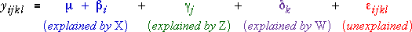

Factorial experiments with three controlled factors
Many industrial experiments seek to simultaneously assess the effects of three or more controlled factors. In a complete factorial experiment, two or more levels are used for each factor and all possible combinations of factor levels are used for the same number of runs of the experiment (replicates).
In this section, we consider factorial experiments with three factors.
Soft drink bottling
The fill level of bottles of soft drink produced by a filling machine varies from bottle to bottle. A soft drink bottler wants to discover how characteristics of the filling process affect the closeness of the level to a target height and conducts an experiment in which three variables are controlled.
There are 12 combinations of factor levels and two replicates, giving a total of 24 runs of the experiment, conducted in random order. The response is the Fill height deviation— positive if the bottle is overfilled and negative if it is underfilled.
| Carbonation percent | ||||
|---|---|---|---|---|
| Pressure | Line speed | 10% | 12% | 14% |
| 25 psi | 200 bpm | -3, -1 | 0, 1 | 5, 4 |
| 250 bpm | -1, 0 | 2, 1 | 7, 6 | |
| 30 psi | 200 bpm | -1, 0 | 2, 3 | 7, 9 |
| 250 bpm | 1, 1 | 6, 5 | 10, 11 | |
The data are displayed graphically in the 3-dimensional diagram below. The colour of the crosses represents the variable Line speed.
Rotate the diagram either by clicking Spin or dragging the centre of the diagram. Observe that Fill height deviation seems highest when carbonation, pressure and line speed are all high.
Model with only main effects
The simplest model for how three factors affect the mean response simply adds together their separate effects. Using the notation yikjl to denote the l'th replicate for the i'th level of X, j'th level of Z and k'th level of W, this model can be written in the form:

where the red error term is assumed to be normally distributed with mean zero.
No interaction
In this simple model, the effect of changing X is assumed to be the same whatever the levels of Z and W (and similarly for the other factors). There is said to be no interaction between the effects of the factors.
Soft drink bottling
The diagram below shows models for the fill height deviation data.
Click the checkboxes for Carb and Press to display a model for the data with main effects for these two variables only. This is the two-factor model that was described in the previous chapter.
Now click the checkbox Spd to add Line speed to the model. Observe that changing line speed is modelled to have the same effect on mean Fill height deviation for all combinations of Pressure and Carbonation.
Finally, click the y-x button to rotate the diagram. Observe that the effect of changing carbonation is the same for all combinations of Pressure and Line speed — all four lines are parallel.